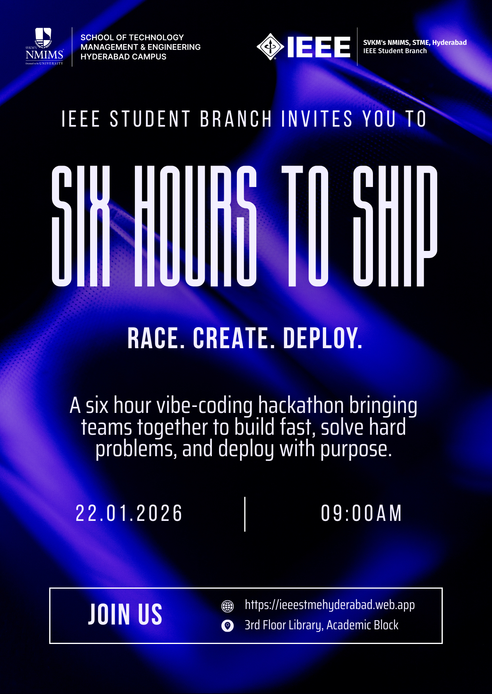

"Six Hours to Ship" is a high-intensity technical sprint themed "Race Create Deploy," designed to bridge the gap between academic projects and industry demands by shifting the focus from mere ideation to ruthless execution.Unlike traditional hackathons that allow for extended development time, this event challenges teams to conceptualize, build, and deploy a fully functional application within a strict six-hour window. This compressed timeline is intentionally organized to simulate the rigors of a professional engineering environment—akin to a critical hotfix or an agile deadline—compelling students to master time management, scope prioritization, and the concept of "vibe coding," where flow state takes precedence over perfection. By requiring a live, deployed URL rather than a local prototype, the event forces participants to confront the challenges of production environments, ensuring they learn the discipline required to finish tasks efficiently and proving they possess the technical agility to be truly industry-ready.